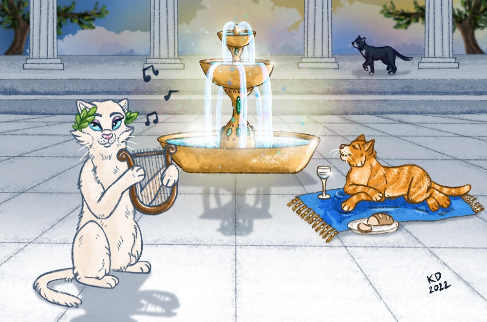

Hervey Cats Foundation
Custom Illustrations & Website Management

Custom Illustrations & Website Management
The Hervey Cats Foundation is a shelter located in Alberta. I became in charge of creating simple photo images for their online blog as well as managing the posting of these articles through WordPress. Many of these articles offer good advice for cat owners and cute short stories that are charming for any reader.
I saw a perfect opportunity to really take these blogs to the next level; these articles needed more personalization! I start by reading the weekly articles and write down key notes to get the objective I need to present. I use my iPad Pro and pencil, using the well known digital art program, Procreate.
It is my joy of capturing emotions and creating characters for these blogs! Hervey Cats have a number of times expressed their love for these drawings.